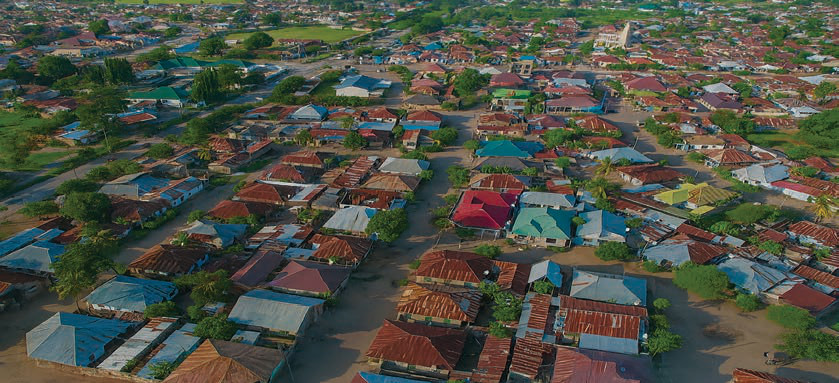

Clustered population distribution
This refers to a situation where people concentrate in one area for settlement or engagement in various social and economic activities. For example, the population in urban areas such as Dar es Salaam, Dodoma, Mwanza and Arusha, or in areas rich in resources and economic opportunities. Figure 1 indicates clustered population distribution.

Figure 1: Clustered population distribution
Uniform population distribution
This refers to a situation where people are evenly spread across a large area. The number of people is about the same in different places, with no area having more or fewer people. This type of distribution often happens in farming areas, where people live based on resources like water or fertile land for growing crops. Figure 2 indicates uniform population distribution.

Figure 2: Uniform population distribution